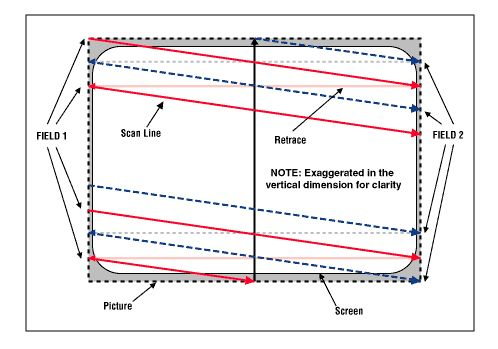
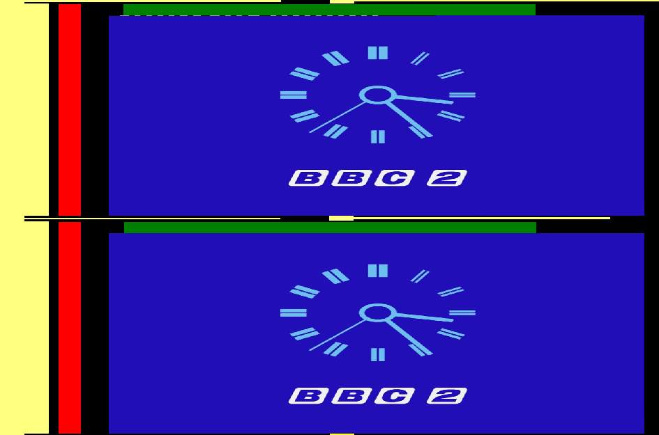
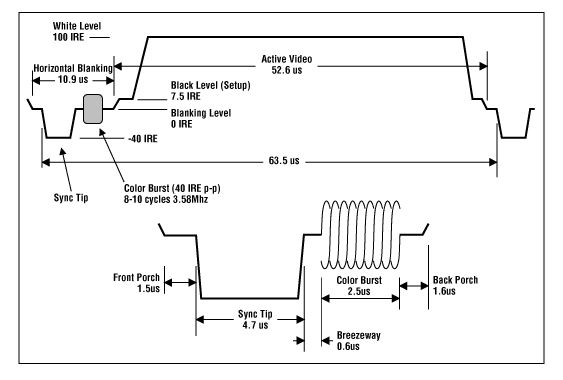
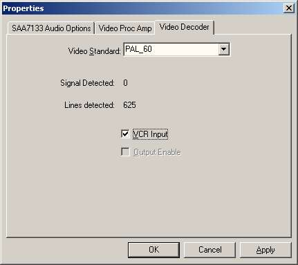
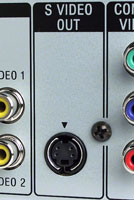
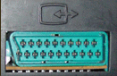
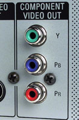
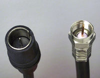

A video signal is an electrical voltage that
fluctuates over time.
These fluctuations are interpreted by a TV set while an electron beam
is zigzagging across the screen to draw a picture, line by line. This
is also known as scanning, and a single line as a scan line.
The shape
of the signal fluctuations tell the TV how bright a certain spot on the
screen should be (luma or Y) and what color it
should have
(chroma or C).
When a pulse of a certain shape in the signal occurs, the TV
knows a line has ended and that the beam should travel back to
the other edge of the screen to start drawing a new one. This is called
horizontal
retrace; the pulse is
known as horizontal sync.
While it is traveling back the beam is
switched off so you don’t see the trace. During the part of the video
signal
at which this is happening is called horizontal blanking
or horizontal
delay. For
each video line coming into a TV, only about 5/6th is actually being
drawn and
about the first 1/6th of
the total time is spent traveling back to the starting position. During
the horizontal blanking, another synchronizing signal is included
called color
burst.
It contains information needed to decode the color in the part of the
line you do see. A video source like a VCR produces an endless string
of
video lines.
A specially patterned video line, vertical sync,
indicates that a
picture
is finished. At this point the beam is located at the bottom of the
screen and has to travel up again to be able to begin drawing the next
picture. With the electronics of the first TV's this would take some
time. This time interval is known as the vertical retrace
time. During this time, analogue video line signals will
keep coming in at regular intervals
from the TV tuner or the VCR, but the beam is switched off, so these
lines are not drawn on the screen. In the digital age, all kinds of
extra information like teletext is digitally encoded in these
video lines. This
group of lines is known as the vertical blanking interval
area (or VBIabbreviated)
and the encoded data as VBI data. The lines that result
in the picture
lines are called active scan lines.
|
 |
| figure 1: Interlaced scanning system (source: Composite/CVBS Interface) |
|  |
| figure 2: illustration of the waveform |
Figure 2 shows a full 625 line PAL frame showing the two fields of a BBC broadcast including horizontal and vertical blanking areas. The yellow vertical bar represents the horizontal sync signal that is present in all video lines; the horizontal yellow/black lines the vertical sync lines that separate the fields; the red bars the color burst and the green bar the Teletext area that can be part of the VBI area. Other digital signals that may be present in the VBI area like closed caption and Video Program System (or VPS abbreviated) are not shown. A Wide Screen Signal (or WSS abbreviated; the white dashed line) is included in the first field, but that is just for illustration.
|  |
| figure 3: a typical waveform of a NTSC composite video signal (source: Composite/CVBS Interface) |
Figure 3 shows the waveform of a NTSC scan line. In the active part of the signal, a low signal results in the scan line being black while a high signal results in it being white. A value in between results in a grey line. The signal in the example would have resulted in a horizontal white line being drawn. To have a small black dot in the middle of this line, the signal would have to dip rapidly to black level and up again. The faster the dip, the smaller the dot would be. This brings us to another point: to show fine detail, the signal needs to be able to change rapid. Rapid changes in a signal equal high frequencies, since frequency is another word for changes per time unit.
This did give some problems when color was added later. There have been
various solutions for it, but the basic principle was the same: a
single high frequency was singled out and the color information was
superimposed (modulated) on it. This frequency was chosen so high that
if the signal was watched on a black and white TV, the color
information would only distort very fine details which most people
would not notice. This single frequency is called the Chrominance
subcarrier frequency. NTSC chose 3.58 MHz and PAL 4.43 MHz.
In a color TV, this single frequency is filtered out and processed
separately by a process called Y/C separation. To decode the color
information, a reference signal is included in the horizontal blanking
part of the scan line. This reference signal is called the color burst
and can be seen in figure 4.
|
| figure 4: the color burst (source: Composite/CVBS Interface) |
The hue of the color is determined by the phase difference between the color burst and the color subcarrier. The amplitude determines the saturation. For a more elaborate explanation we refer to the links in the reference section.
Depending on the quality of the filter doing this separation, fine luma detail around this frequency would be damaged to some extend, while some luma fine detail would end up in the chroma signal and course color artifacts. High Y frequencies (= fine detail) are mixed with low chroma frequencies (color crosstalk = rainbow effects) and vice versa (luma crosstalk = dot crawls). Look in the Removal of chroma artefacts and the references therein for a more thorough explanation and examples of these artifacts and how to get rid of them.
References:
Glossary
of Video Terms and Acronyms: A great place to start looking for
oddball video acronyms.
The
Engineer's Guide Decoding & Encoding
Television
Technical Theory: Analogue Video
Television
Technical Theory: Appendix, The Color Encoding Process
Scenarist
Closed Caption Tools package: Capturing closed captions with a TV
tuner card
and graphedit.
Gary Robson's
Closed Captioning FAQ: about closed
and open captions.
ITU-R
BT.472-3 recommendation: Video-frequency characteristics of a
television
system to be used for the international exchange of programmes between
countries
that have adopted 625-line colour or monochrome systems.
ITU-R BT.653-3 recommendation: Teletext systems.
ETSI
EN
300 706 V1.2.1: Enhanced Teletext specification
ETSI
EN
300 708 V1.2.1: Television systems; Data transmission within
Teletext
ETSI
EN
300 294 V1.4.1 (2003-04): About the Wide Screen Signal.
ETSI
TR 101 233 V1.1.1 (1998-02): Television Systems: Code of practice
for allocation of services in the Vertical Blanking Interval (VBI).
ETSI
EN 300 231 V1.3.1 (2003-04): Television systems;Specification of
the domestic video Programme Delivery Control system (PDC)
Depending on the frequency of the electricity mains in a country, two scan line timings have been developed: 625 lines/frame, 50 fields per second and 525 lines/frame, 60 fields per second. These are often (incorrectly) referred to as PAL and NTSC timing respectively, referring to the TV systems adopted by Germany and America. (Actually PAL and NTSC refer to the system used for color encoding, and nations with PAL 525/60 and NTSC 625/50 systems DO exist. But in this guide we will follow this incorrect habit too.)
PAL numbers:
NTSC numbers:
SECAM:
SECAM is the French TV system. It follows the same timing as PAL above, but encodes the color differently. Once the Video decoder is set to the SECAM video standard, you can follow the PAL guidesPAL/M:
This is a TV system used in amongst others Brazil. It uses NTSC timing, but PAL/M color encoding. Once the Video decoder is set to the PAL_M video standard, you can follow the NTSC guides.PAL-60:
Modern European equipment can handle both 625/50 and 525/60 timings.
It
cannot handle NTSC color encoding. So if you use European 'NTSC
playback' capable equipment to play back an American NTSC tape or DVD,
they will produce a signal that
retains the NTSC timing, but has both the color encoding and the color
carrier frequency converted to PAL. Modern
European TV’s understand this hybrid signal and show the video. Some
game consoles also produce a PAL-60 signal instead of true PAL.
To capture this, you need a device that understands PAL-60. Almost all
devices do. Unfortunately, many drivers won’t give you this option. If
your device/driver has the option, set the Video decoder to the PAL_60
video standard, and you can follow the NTSC guides for the rest.

NTSC 443:
NTSC 443 is another hybrid. It uses NTSC timing end color encoding, but the color carrier frequency has been shifted from 3.58 to 4.43 MHz, the PAL color carrier frequency. Some game consoles can output this. Once you have set the decoder to the correct video standard, you can follow the NTSC guides.
There are several signal types which are of interest for capturing: RF, Composite, S-video and Component. In this subsection the pros and cons will be discussed, in order decide which type you should use. Some characteristics:
Composite/CVBSS-video or Y/C

S-video or Y/C carries the luma and chroma components as separate
signals. Since no
Y/C separation is needed, there will be no comb-artifacts. If it is
possible to use
such a
S-video connection for capturing you should try it, because it will
probably
result in better quality.
There are exceptions to this rule: devices that store video in composite form, like laser disks but do have an s-video output have to perform Y/C separation internally to produce this signal. If the internal comb filter is of lesser quality than the comb filter in your capture device, you would be better off using the composite video signal instead. So always test!
A special case are VHS VCR tapes. Some people think VHS stores a composite signal while S-VHS stores Y and C separately on tape. This has led to people mistakenly referring to s-video outputs as S-VHS outputs. In fact, both formats store chroma at a lower frequency band than luma (color under). For normal VHS, there is a very slight overlap between the chroma and luma bands on tape, which was eliminated for S-VHS. Still, on playback both formats produce separate Y and C signals. To produce a composite signal, a standard VHS VCR will join these again. Your capture device will have to separate them again, producing the above mentioned artifacts.
A S-VHS recorder however will keep Y and C separate, even when playing back normal VHS tapes. So if you can get your hands on one, use a S-VHS recorder even when you only want to digitize ordinary VHS tapes.
A final argument for preferring s-video for grabbing lies in the way capture devices operate. Most devices have two Analogue-to-Digital-Converters (ADC). When capping analogue, only one of those is used. When capping Y/C however, each signal gets it's own ADC which increases the sample resolution and precision. There simply will be more data for the device to work with.
Component variations: RGB (Europe) and Component Video YPbPr (US)
|  |  |
| Component variations: RGB (Europe) | Component Video YPbPr (US) |
Component video splits up the video information in three signals. In America, Component Video or YPbPr is prevalent. It is made up of the luma component (Y), the red difference sample (= R-Y = U) and blue difference sample (= B-Y = V). Again, there is no Y/C separation and hence no comb-artifacts. In Europe, RGB was chosen instead. It carries Red, Green and Blue as separate signals. (Sometimes it uses 4 signals, R,G,B and sync.) In Europe, the most common form for a RGB connector is the SCART connector, though RCA and BNC connectors are also found on some equipment. Since consumer equipment rarely can capture these signals and most analogue sources cannot output them anyway, the component signal types are not of interest to us.
A few words about the SCART connector: this connector is just that, a
connector. Depending on the device it can contain composite, s-video,
RGB, sound and various control signals, both in and out and in any
combination. Having a SCART does not imply having RGB or s-video.
For instance, most European standard VHS VCR's have a SCART connector
that only delivers composite and sound. Using the SCART adapter below
will not give you s-video in that case; the result would be that the
composite signal ends up on the Y pin of the s-video lead, resulting in
a flickering black and white picture.
RF (Broadcast)

RF is the signal used for TV broadcast. A composite video signal and a mono or stereo audio signal are modulated onto a radio carrier wave. To decode this you need a TV card. The TV card will split of the carrier wave and decode the audio signal. Typically, he resulting audio signal is fed into the line in of the sound card using an internal or external loop-through cable. The resulting video signal is composite and suffers from the same limitations.
References:
Television
Technical Theory: Analogue Video
Cybertheater
- Cybertheather - Video Signal Formats
Cybertheater
- Cybertheather - Guide to Comb Filters: Y/C separation
footnotes:
(1) Closed Captioning – Service that provides decoded text information
transmitted with the audio and video signal and displays it at the
bottom of the
display. See (M) NTSC EIA-608 specification. Transmitted on line 21 of
NTSC/525
transmissions and line 22 of PAL/625 transmissions, it contains
subtitling
information only. These captions show sound effects (e.g., "phone
ringing" and "footsteps").
(2) Video Program System (VPS) and Program Delivery Control (PDC) -
Information
is included in the video signal to automatically control VCRs and
overrule the
timer if a TV program starts on a different time. Hidden in line 16.
Back to VirtualDub postprocessing
Back to AviSynth postprocessing
Back to the Index: HOME
English version last edited on: 06/13/2004 | First release: n/a | Authors: Version4Team | Content by Doom9.org